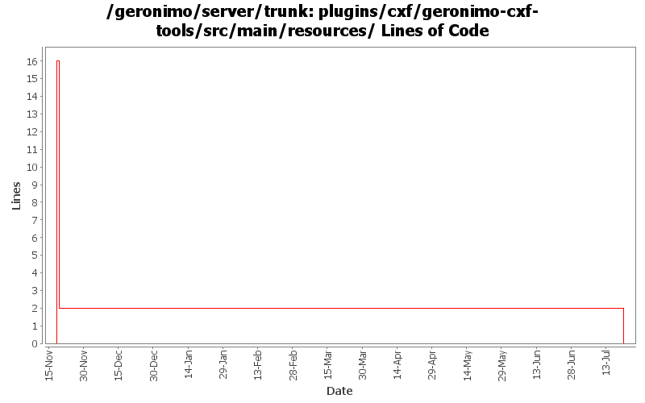

[root]/plugins/cxf/geronimo-cxf-tools/src/main/resources

| Author | Changes | Lines of Code | Lines per Change |
|---|---|---|---|
| Totals | 4 (100.0%) | 19 (100.0%) | 4.7 |
| gawor | 3 (75.0%) | 19 (100.0%) | 6.3 |
| djencks | 1 (25.0%) | 0 (0.0%) | 0.0 |
GERONIMO-4737 Move resources that need filtering into filtered-resources directories. Mostly patch from shawn jiang, thanks
0 lines of code changed in 1 file:
rename java2wsdl to java2ws command to match cxf name (part of GERONIMO-4351)
1 lines of code changed in 1 file:
improve registration of jaxws gshell commands
2 lines of code changed in 1 file:
mostly working plugin that uses CXF tooling to generate WSDL and other artifacts for JAX-WS services (GERONIMO-4351)
16 lines of code changed in 1 file: